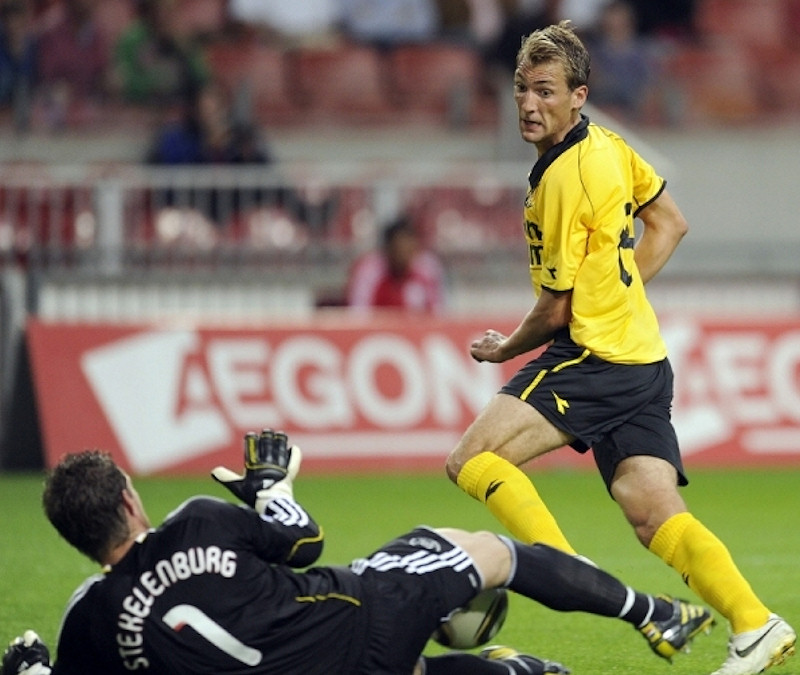
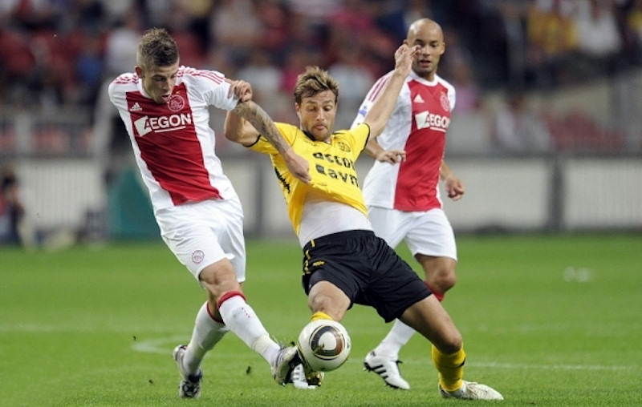
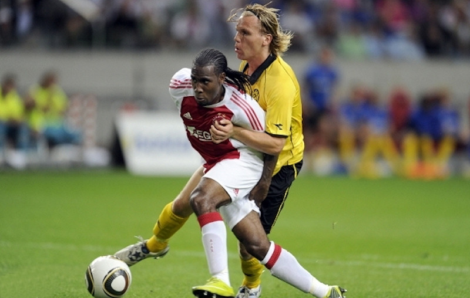

Ajax bleef voor het eerst dit seizoen zonder
tegentreffer. Dat had ook zo maar eens anders kunnen aflopen. De
defensie van de thuisclub liet het af en toe lelijk afweten.
De verdedigers hadden in de eerste helft vooral veel moeite met
Willem Janssen, die nog steeds in de belangstelling van FC Twente
staat.
Toby Alderweireld was teruggekeerd in de basisformatie van Ajax. De
Belg moest afgelopen dinsdag tijdens de uitwedstrijd bij Dinamo Kiev
nog plaatsmaken voor de ervaren Oleguer. Suarez voetbalde zijn
eerste wedstrijd in de eredivisie van dit seizoen. De topschutter
miste de vorige duels met FC Groningen en Vitesse wegens een
schorsing.

Suarez frommelde zich in de 34e minuut door de defensie van Roda JC.
Hij vond via Eric Addo en Sebastian Svärd de vrijstaande Mounir El
Hamdaoui, die van dichtbij scoorde (1-0). Siem de Jong, Suarez
en Jan Vertonghen verzuimden Ajax voor rust aan een grotere
voorsprong te helpen.

Suarez scoorde in de 52e minuut na een fraaie combinatie met El
Hamdaoui het 50.000e doelpunt uit de geschiedenis van de eredivisie
(3-0).
